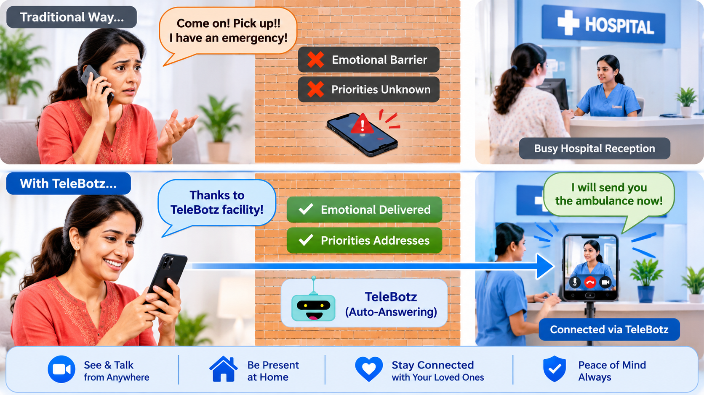

Patients & families
Ask general questions about appointments, departments, visiting hours, or how to find the right reception point.
Give patients, families, and hotel guests another way to reach your reception team. TeleBotz connects remote visitors with people at your location through a smartphone-powered virtual entrance.
See how TeleBotz works
A quick conversation can help visitors understand where to go, what to expect, and who can assist them.
Ask general questions about appointments, departments, visiting hours, or how to find the right reception point.
Connect with the front desk to ask about check-in, amenities, arrival timing, or special requests.
Engage remote visitors while continuing to assist people who are already at the reception desk.
A remote visitor uses the User App, while a smartphone at the destination runs the Robot App. Optional hardware can position the destination phone for the reception setting.
Offer a straightforward way for visitors to approach the reception remotely.
Let visitors speak with reception staff to get general guidance and answers.
Provide a view of the reception area to help visitors feel oriented.
Use smartphones at both ends, with optional hardware to suit the location.
Support general reception questions, directions, arrival coordination, and enquiries.
Explore a remote contact channel alongside the existing front-desk workflow.
Use TeleBotz for general visitor guidance, not diagnosis, emergency response, or urgent clinical advice. Feature availability depends on the final app and hardware configuration.
We are exploring how smartphone-powered telepresence can help hospitals and hotels connect visitors with their reception teams.
Discuss this use case